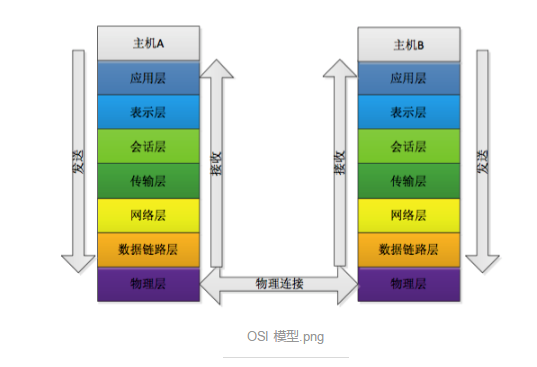
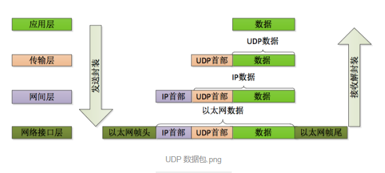
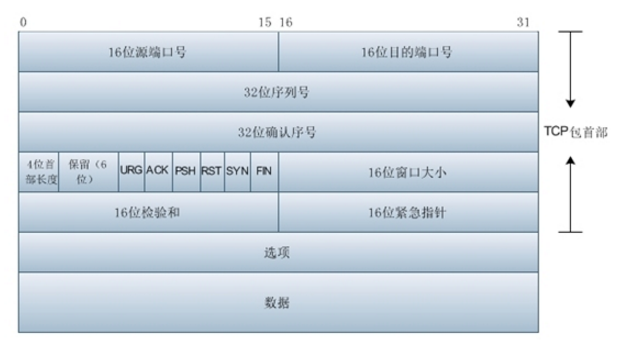
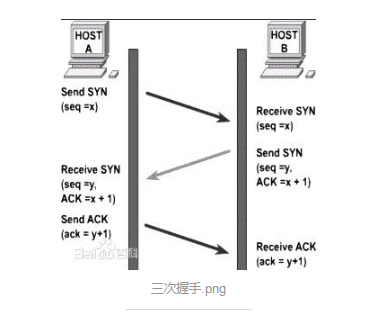
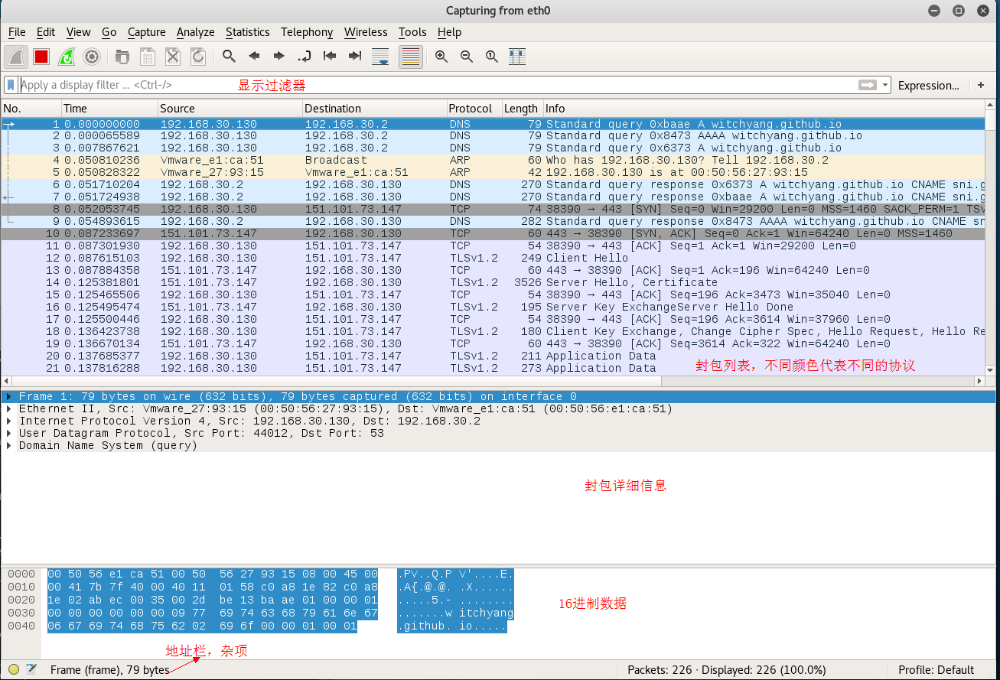
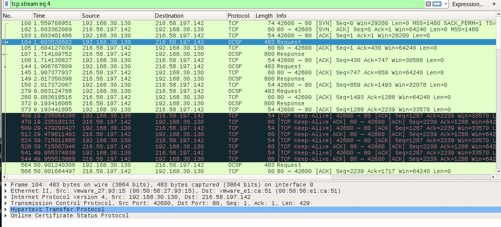
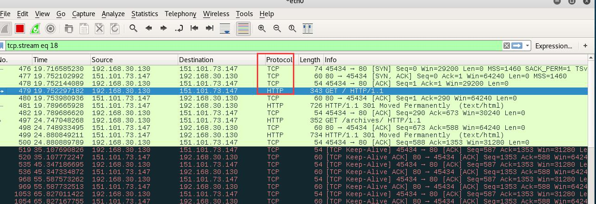
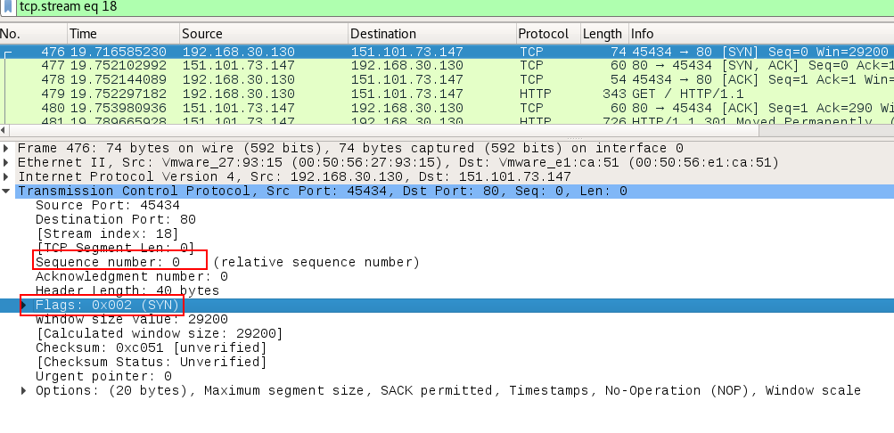
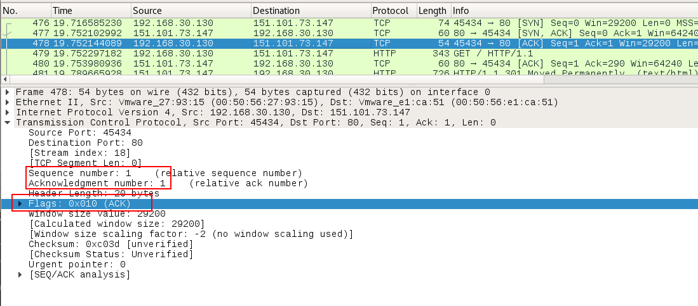
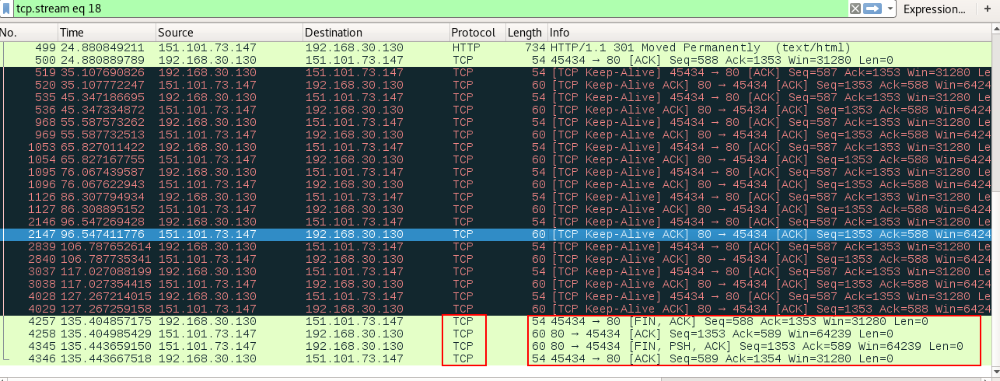

OSI七层模型
在理解TCP/IP协议之前，先回顾一下OSI（Open System Interconnection Model）模型，是一个由国际标准化组织提出的概念模型，试图提供一个使各种不同的计算机和网络在世界范围内实现互联的标准框架。
七层模型由下到上：

物理层
负责最后将信息编码成电流脉冲或其他信号用于网上传输。
例如RJ45插头将数据转化成0和1。
数据链路层
数据链路层通过物理网络链路提供数据传输。不同的数据链路层定义了不同的网络和协议特征，其中包括物理编址，网络拓扑结构，错误校验，数据帧序列以及流控。
可以简单理解为：规定了0和1的分包形式，确定了网络数据包的形式。
网络层
网络层负责在源和终点之间建立连接。
可以理解为：需要确定计算机的位置。IPV4, IPV6.
传输层
传输层向高层提供可靠的端到端的网络数据流服务。
可以理解为：每一个应用程序都会在网卡注册一个端口号，该层就是端口与端口的通信。常用的TCP/IP协议。
会话层
会话层建立，管理和终止表示层与实体之间的通信会话。
建立一个连接（自动的收集信息，自动的网络寻址）
表示层
表示层提供多种功能用于应用层数据编码和转化，以确保以一个系统应用层发送的信息可以被另一个系统应用层识别。
可以理解为：解决不同系统之间的通信。比如Linux下QQ可以和Window下的QQ通信。
应用层
OSI的应用层包括文件的传输，访问，管理协议以及文件虚拟终端协议和公用管理系统信息等。
规定数据的传输协议。常见的应用层协议有：
| 协议 | 端口 | 说明 |
|---|---|---|
| HTTP | 80 | 超文本传输协议 |
| HTTPS | 443 | HTTP+SSL, HTTP的安全版 |
| FTP | 20，21，990 | 文件传输协议 |
| POP3 | 110 | 邮局协议 |
| SMTP | 25 | 简单邮件传输协议 |
| telnet | 23 | 远程终端协议 |
TCP/IP 协议分层
OSI分层模型的优势就是上层的变动完全不影响下层的结构，因此TCP/IP的设计吸取了分层模型的精华思想——封装。每层对上一次提供服务的时候，上一次的数据结构是黑盒，直接作为本层的数据，而不需要关心上一层协议的细节。
TCP/IP分层模型的分层以以太网上传输UDP数据包如图所示：

数据包
每一个数据包都包含”标头”和”数据”两个部分，”标头”包含本数据包的一些说明，”数据”则是本数据包的内容。
细分的话：
应用程序数据包：标头部分规定应用程序的数据格式，数据部分传输具体的数据内容。
TCP/UDP数据包： 标头部分包含双方发出端口和接收端口。UDP数据包：‘标头’长度有8个字节。‘数据包’总长度最大为65535字节，正好放进一个IP数据包。TCP数据包：理论上没有长度限制，但是为了保证网络传输效率，通常不会超过IP数据长度，确保单个包不会被分割。
IP数据包： 标头部分包含通信双方的IP地址，协议版本，长度等信息。‘标头’长度为20～60字节，‘数据包’总长度最大为65535字节。
以太网数据包：最基础的数据包，标头部分包含了通信双方的MAC地址，数据类型等。‘标头’长度有18字节，‘数据’部分长度46～1500字节。
现在具体看一下TCP的数据包：

- 源端口号 Source Port： 数据发起者的端口号，16bit
目的端口号 Destination Port： 数据接收者的端口号，16bit
1,2 用来区分主机中的不同进程，而IP地址是用来区别不同的主机的。源端口号和目的端口号配合上IP首部的源IP地址和目的IP地址就能确定唯一的一个TCP连接。序号 Sequence Number： 32bit的序列号，由发送方使用。用来识别从TCP发端向TCP收端发送的数据字节流，它表示在这个报文段中的第一个数据字节在数据流中的序号，主要用来解决网络报乱序的问题。
确认序号 Acknowledgment Number：32bit确认号，是接收数据方期望收到发送方的下一个报文段的序号，因此确认号应当是上次已经成功接收到的数据字节序号加1. 不过只有当标志位中的ACK标志为1时，该确认序列号字段才有效，主要用来解决不丢包的问题。
首都长度 Offset： 给出首部中32bit字的数目，需要这个值是因为任选字段的长度是可变的。这个字段占4bit，最多可以表示15×32bit= 60字节的首部。因此TCP最多有60字节的首部，然而，没有任选字段，正常的首部长度为20字节。
保留：6bit. 均为0.
TCP Flags: TCP首部有6个标志比特，他们中多个可以被同时设置为1，主要用于操作TCP的状态机。
URG：表示TCP包的紧急指针域有效，用来保证TCP连接不被中断，并且督促中间层设备要尽快处理这些数据。当URG=1时，表示报文段中有紧急数据，应尽快传送。
ACK：确认比特。ACK=1时代表这是一个确认的TCP包，为0则不是确认包。
PSH: 推送比特，表示PUSH操作。当PSH=1时，数据包到达接收端之后，接收端尽快的交付给应用进程，而不是在缓冲区中排队。
RST: 复位比特。用来复位那些产生错误的连接，也被用来拒绝错误和非法的数据包。当RST=1时，表明TCP连接中出现严重差错，必须释放连接，再重新建立连接。
SYN: 同步比特。 在建立连接时用来同步序号。SYN标志位和ACK标志位搭配使用。SYN= 1， ACK =0, 表示一个连接请求报文段。SYN = 1，ACK =1 表示同意建立连接。这个标志的数据包经常被用来进行端口扫描。扫描者发送一个只有SYN的数据包，如果对方主机相应了一个数据包回来，则表示这台主机存在这个端口，但是由于这种扫描方式只是进行TCP三次握手的第一次握手，因此这种扫描的成功表示被扫描的机器很不安全。一台安全的主机将会强制要求一个连接严格的进行TCP的三次握手。
FIN: 终止比特。FIN =1 时，表示此报文段的发送端的数据已经发送完毕，并要求释放传输协议。发送FIN 标志位的TCP数据包后，连接将被断开。这个标志的数据包也经常被用于进行端口扫描。
窗口：用来控制对方发送的数据量，通知发放已确定的发送窗口上限。
校验和： 该字段检验的范围包括首部和数据两个部分，由发端计算和存储，并由收端进行验证。
紧急指针：紧急指针在URG=1的时候才有效，指出本报文段中的紧急数据的字节数。
选项：长度可变，最长可达40字节。
TCP/IP协议族常用协议
应用层：TFTP, HTTP, SNMP, FTP, SMTP, DNS, Telnet等
传输层：TCP, UDP
网络层：IP, ICMP, OSPF, EIGRP, IGMP
数据链路层：SLIP, CSLIP, PPP, MTU
TCP（Transmission Control Protocol）, 传输控制协议，可以提供可靠的，面向连接的网络数据传递服务。
传输控制协议主要包含下列任务和功能：
确保IP数据报的成功传递。
对程序发送的大块数据进行分段和重组。
确保正确排序及按顺序传递分段的数据。
通过计算校验和，进行传输数据的完整性检查。
根据数据是否接收成功发送肯定消息。通过使用选择性确认，也对没有收到的数据发送否定确认。
TCP的工作原理：三次握手，四次挥手。
三次握手
TCP是面向连接的，无论哪一方向另一方发送数据之前，都必须先建立一条连接。建立过程称为TCP三次握手，三次握手的目的是同步连接双方的序列号和确认号，并交换TCP窗口大小：

第一次握手： 建立连接。客户端发送连接请求报文段，将SYN位置为1，Sequence Number 为x，然后，客户端进入SYN_SEND状态，等待服务器的确认。
第二次握手： 服务器接收到了客户端发送的SYN报文段，需要对这个SYN报文段进行确认。设置Acknowledgment Number 为 x+1（Sequence Number+1）, 同时，自己还要发送SYN请求信息，将SYN位置为1，Sequence Number 为y，服务器端将上述所有信息放到一个报文段（即 SYN+ACK报文段）中，一并发送到客户端，此时服务器进入SYN_RECV状态。
第三次握手： 客户端收到服务器的SYN+ACK报文段，然后将Acknowledgment Number 设置为 y+1, 向服务器发送ACK报文段，这个报文段发送完毕后，客户端和服务器端都进入ESTABLISHED状态，完成TCP三次握手。
四次挥手
当客户端和服务器通过三次握手建立了TCP连接之后，当数据传送完毕，就需要断开TCP连接，此过程就是四次挥手：
第一次挥手：主机1（也可以是客户端，也可以是服务器端），设置Sequence Number 和Acknowledgment Number , 向主机2 发送一个FIN 报文段。 此时，主机1进入FIN_WAIT_1 状态，表示此时主机1 没有数据要发送向主机2 了。
第二次挥手：主机2收到主机1发送的FIN报文段，向主机1回复一个ACK报文段，Acknowledgment Number 为 Sequence Number +1，主机1进入FIN_WAIT_2状态；意味着主机2告诉主角1，”同意” 关闭请求。
第三次挥手：主机2 向 主机1发送FIN报文段，请求关闭连接，同时主机2进入LAST_ACK状态。
第四次挥手：主机1收到主机2发生的FIN报文段，向主机2发送ACK报文段。然后主机1 进入TIME_WAIT状态；主机2 收到主机1 的ACK报文段以后，就关闭连接；此时主机1等待2MSL后依然没有收到回复，则证明服务端已经正常关闭。之后主机1 也关闭。
什么是Wireshark
Wireshark 是开源的网络封包分析软件，功能十分强大。可以截取各种网络封包，显示网络封包的详细信息。
为了安全考虑，wireshark只能查看封包，而不能修改封包的内容，或发送封包。
wireshark的下载地址为： https://www.wireshark.org/
wireshark界面组成

封包详细信息里面，可以查看协议中的每一个字段：

Frame: 物理层的数据帧概况
Etgernet II: 数据链路层以太网帧头部信息
Internet Protocol Version 4: 互联网层IP包头部信息
Transimission Control Protocol : 传输层T的数据段头部信息，此处是TCP
Hypertext Transfer Protocol: 应用层的信息，此处是HTTP协议
现在我们从Wireshark 抓取到的数据包中，理解一下三次握手，四次挥手过程。
选中开始抓包之后，打开浏览器浏览一下网页。
在过滤器中输入http过滤，然后选中GET / HTTP /1.1 这条记录，右键“Follow TCP Stream”，可以得到与浏览器打开网站相关的数据包：
可以发现 截获了三次握手的三个数据包，第四个数据包才是HTTP的，这说明HTTP确实是使用TCP建立连接的。

第一次握手。客户端发送了一个TCP， 标志位为SYN，序列号为0，客户端请求建立连接。

第二次握手。服务器发回确认包，标志位为SYN,ACK，确认序列号为刚刚的请求序列号+1。
第三次握手。客户端再次发送确认包.

现在看最后的结束连接过程。

参考资料